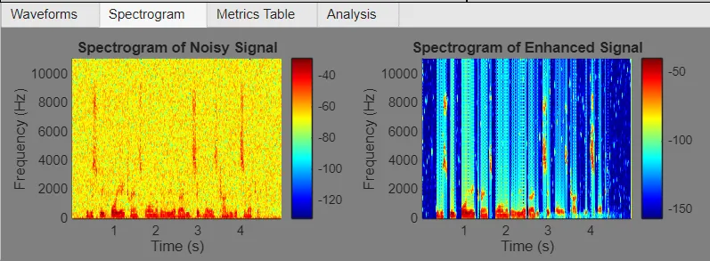
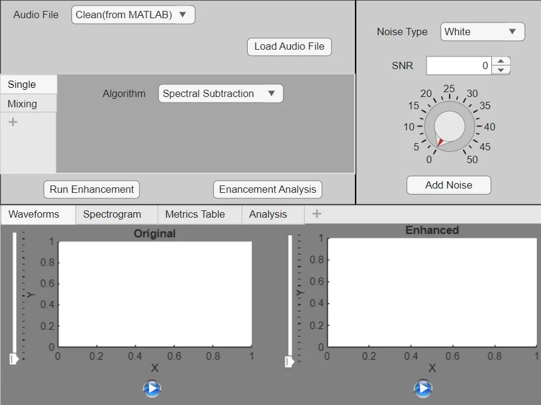
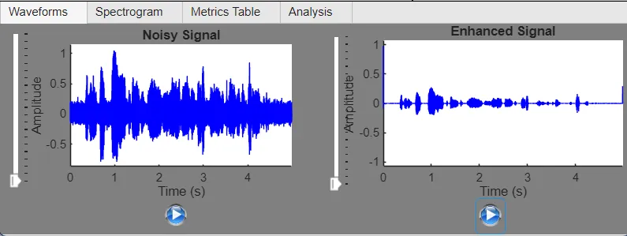
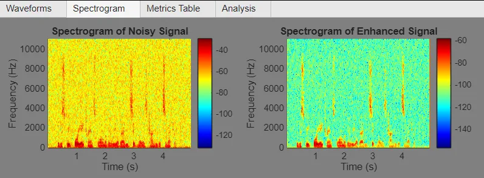
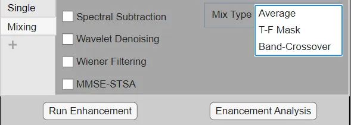
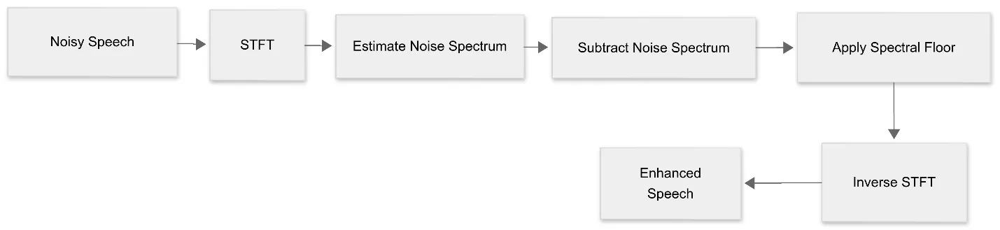
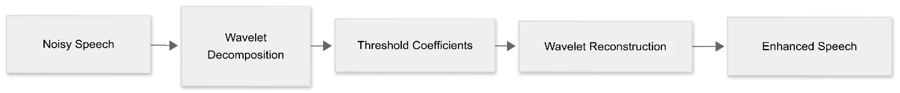

← Side quests
Speech Enhancement Studio
A MATLAB app that adds realistic noise to speech, cleans it with four algorithms or a mix of them, and compares the results.

Overview
I chose four noise types to cover real conditions: white (stationary), babble (non-stationary), car interior (low-frequency, quasi-stationary) and restaurant.
Four enhancement methods are built in: spectral subtraction, Wiener filtering, MMSE-STSA and wavelet denoising. Fusion modes (average, time-frequency mask and band crossover) combine them.
What I did
- 01Implemented the four enhancement algorithms in MATLAB.
- 02Built the App Designer GUI: audio source, noise type, SNR knob, algorithm or mixing choice, and waveform, spectrogram, metrics and analysis tabs.
- 03Evaluated every algorithm against every noise type.
Signal path
- Clean speech
- + noise at set SNR
- STFT
- Enhancement / fusion
- ISTFT
- Metrics
Gallery · 6 images
A closer look





